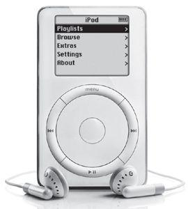

The original iPod, 2001
Once a year Jobs took his most valuable employees on a retreat, which he called “The Top 100.” They were picked based on a simple guideline: the people you would bring if you could take only a hundred people with you on a lifeboat to your next company. At the end of each retreat, Jobs would stand in front of a whiteboard (he loved whiteboards because they gave him complete control of a situation and they engendered focus) and ask, “What are the ten things we should be doing next?” People would fight to get their suggestions on the list. Jobs would write them down, and then cross off the ones he decreed dumb. After much jockeying, the group would come up with a list of ten. Then Jobs would slash the bottom seven and announce, “We can only do three.”
每年，乔布斯都会带着他最有价值的员工进行一次百杰外出集思会。这100名员工是这样被选出来的：如果你只能带上100人跳上救生船去开创下一家公司，你会带上谁？在每一次秘密会议结束时，乔布斯会站在一块白板前（他非常喜欢白板，因为白板能让他完全掌控现场，而且方便讨论要点），问大家：“我们下一步应该做的十件事情是什么？”人们会互相争论，让自己的建议能被采纳。乔布斯会把这些建议写下来，然后再删掉那些他认为愚蠢的。几轮辩论下来，整个小组将最终确定前十大“最应该做的事”。乔布斯会把最后七件全部画掉，然后宣布：“我们只能做前三件。”
By 2001 Apple had revived its personal computer offerings. It was now time to think different. A set of new possibilities topped the what-next list on his whiteboard that year.
到2001年，苹果已经为自身的计算机产品做了不少创新。现在是“非同凡想”的时候了。那一年，乔布斯白板上的“下一步做什么”清单中又多了一些新的可能性。
At the time, a pall had descended on the digital realm. The dot-com bubble had burst, and the NASDAQ had fallen more than 50% from its peak. Only three tech companies had ads during the January 2001 Super Bowl, compared to seventeen the year before. But the sense of deflation went deeper. For the twenty-five years since Jobs and Wozniak had founded Apple, the personal computer had been the centerpiece of the digital revolution. Now experts were predicting that its central role was ending. It had “matured into something boring,” wrote the Wall Street Journal’s Walt Mossberg. Jeff Weitzen, the CEO of Gateway, proclaimed, “We’re clearly migrating away from the PC as the centerpiece.”
那时候，数字领域被蒙上了一层阴影。互联网泡沫破裂了，纳斯达克指数也比最髙时下降了超过50%。只有3家科技公司在2001年1月的“超级碗”大赛上登了广告，而上一年这个数字是17家。与此同时，通货紧缩也更加严重。自乔布斯和沃兹尼亚克创立苹果公司以来的这25年中，个人计算机成为了数字革命中的核心产品。但是现在，专家预测它的核心地位即将结束。《华尔街日报》的沃尔特·莫斯伯格（WaltMossberg）写道：计算机“已经衰变成了无聊的东西”。捷威的CEO杰夫·韦特泽恩（JeffWeitzen）宣称：“我们已经明确地要改变个人计算机作为核心产品的局面。”
It was at that moment that Jobs launched a new grand strategy that would transform Apple—and with it the entire technology industry. The personal computer, instead of edging toward the sidelines, would become a “digital hub” that coordinated a variety of devices, from music players to video recorders to cameras. You’d link and sync all these devices with your computer, and it would manage your music, pictures, video, text, and all aspects of what Jobs dubbed your “digital lifestyle.” Apple would no longer be just a computer company—indeed it would drop that word from its name—but the Macintosh would be reinvigorated by becoming the hub for an astounding array of new gadgets, including the iPod and iPhone and iPad.
就在这个时候，乔布斯宣布了一项新的重大战略，这不仅将改变苹果，也将影响到整个技术产业。个人计算机不会成为边缘化的副线产品，而将成为一个“数字中枢”，整合各种数字设备，包括音乐播放器、录像机，以及相机。你可以用计算机连接并同步所有这些设备，它也可以管理你的音乐、图片、视频、信息，以及乔布斯称为“数字生活方式”中包含的方方面面。苹果公司将不再仅仅是一家计算机公司——事实上，“计算机”这个词也将从“苹果计算机公司”的名称中剥离——麦金塔将得到重生，至少在下一个十年中，成为各种新潮数字产品的中心，包括iPod、iPhone和iPad。
When he was turning thirty, Jobs had used a metaphor about record albums. He was musing about why folks over thirty develop rigid thought patterns and tend to be less innovative. “People get stuck in those patterns, just like grooves in a record, and they never get out of them,” he said. At age forty-five, Jobs was now about to get out of his groove.
乔布斯年近30岁时曾作过一个关于唱片的比喻。他一直在思考为何人在30多岁后就会变得思维僵化、缺乏创新意识。他说：“人们被卡在这些固有的形式中，就像唱片中某一段固定的凹槽，他们永远无法摆脱出来。当然，有些人天生就有强烈的好奇心，永远有一颗孩子般的心，可惜这样的人太稀少了。”45岁时，乔布斯准备从他的凹槽中跳出来。
有很多原因可以解释，为什么他能比其他任何人更清楚地预见到未来的数字革命，并全身心投人这一潮流之中：
●一直以来，他都站在人性和科技的交叉点上。他热爱音乐、图片和视频。他也热爱计算机。数字中枢的本质就是把我们对创意艺术的欣赏和伟大的工程技术结合起来。乔布斯在很多次产品介绍的最后都会展示一个简单的页面：上面有一个路标，标示着“人文”和“科技”的十字路口——他正处在这个位置，而且也是基于此，他才先人一步，有了对数字中枢的设想。
●因为他是一个完美主义者，所以他要求把产品的所有部分都整合在一起，从硬件到软件，从内容到营销。在台式计算机领域，这一策略并未胜过微软——IBM模式——一家公司的硬件可以向另外一家的软件开放，反之亦然。但如果计算机成为了数字中枢，对于苹果这样一个整合了计算机、数字设备和软件的公司来说，乔布斯的策略绝对是一个优势。这将意味着移动设备中的内容可以和计算机无缝连接，受其控制。
●他对简约有一种与生俱来的追求。2001年以前，就有人发明了便携式音乐播放器、视频编辑软件，和其他各类数字时尚产品。但是它们都过亍复杂。它们的用户界面甚至比你的录像机更令人困惑，无法与iPod和iTunes相比。
●“孤注一掷”是他最喜欢的词之一，他也愿意把这个词用在他的新构想上。互联网泡诔的破裂导致其他科技公司减少了对新产品的投入。他回忆说：“当所有人都在削减开支的时候，我们反而决定要在情况低迷时继续投资。我们主要会投资在研发上面，发明出一些新东西，一旦低潮期过去，我们就已经领先于竞争对手了。”这种投入造就了苹果公司持续创新最辉煌的十年。
Jobs’s vision that your computer could become your digital hub went back to a technology called FireWire, which Apple developed in the early 1990s. It was a high-speed serial port that moved digital files such as video from one device to another. Japanese camcorder makers adopted it, and Jobs decided to include it on the updated versions of the iMac that came out in October 1999. He began to see that FireWire could be part of a system that moved video from cameras onto a computer, where it could be edited and distributed.
乔布斯关于“计算机将成为数字中枢”这个设想，要追溯到苹果公司在20世纪90年代初开发的“火线”（FireWire）技术。火线是一条高速的串口，能够将数字文件（比如视频）从一台设备快速转移到另一台设备。日本的摄像机制造商采用了这一技术，之后乔布斯决定把火线用在1999年10月上市的新版iMac上。他开始预见到，火线将成为苹果系统的一部分，用来把视频文件从摄像机中转移到计算机上，然后再进行编辑和发布。
To make this work, the iMac needed to have great video editing software. So Jobs went to his old friends at Adobe, the digital graphics company, and asked them to make a new Mac version of Adobe Premiere, which was popular on Windows computers. Adobe’s executives stunned Jobs by flatly turning him down. The Macintosh, they said, had too few users to make it worthwhile. Jobs was furious and felt betrayed. “I put Adobe on the map, and they screwed me,” he later claimed. Adobe made matters even worse when it also didn’t write its other popular programs, such as Photoshop, for the Mac OSX, even though the Macintosh was popular among designers and other creative people who used those applications.
为了让这一功能得以实现，iMac需要有一款出色的视频编辑软件。为此，乔布斯决定去Adobe公司找他的老朋友。Adobe是一家出品数字图像软件的公司，当年也是他帮助成立的。他请他们制作一款适用于新的Mac版本的AdobePremiere软件，当时这一软件在Windows系统中很流行。可是，Adobe公司高层断然拒绝了他，这让乔布斯备受打击，他们说：“麦金塔的用户太少，要单独为它做一个软件不太划算。”乔布斯愤怒了，觉得自己遭到了背叛。他后来跟我说：“我让Adobe出了名，他们却这样对待我。”Adobe随后又拒绝为MacOSX系统定制其他的流行软件，比如Photoshop，即使麦金塔电脑在使用这类软件的设计师和创意人士中非常受欢迎。整个局面更加糟糕了。
Jobs never forgave Adobe, and a decade later he got into a public war with the company by not permitting Adobe Flash to run on the iPad. He took away a valuable lesson that reinforced his desire for end-to-end control of all key elements of a system: “My primary insight when we were screwed by Adobe in 1999 was that we shouldn’t get into any business where we didn’t control both the hardware and the software, otherwise we’d get our head handed to us.”
乔布斯永远都不会原谅Adobe，十年后，他向Adobe发起了一场公开的战争——不允许AdobeFlash在iPad上面运行。他得到了一个宝贵的教训，而这更坚定了他的决心：要对一个系统中的所有关键元素实施端到端的控制。他说：“当1999年Adobe背叛了我们之后，我的第一个想法就是，在我们所涉足的领域，必须要同时控制硬件和软件，否则我们迟早要受制于人。”
So starting in 1999 Apple began to produce application software for the Mac, with a focus on people at the intersection of art and technology. These included Final Cut Pro, for editing digital video; iMovie, which was a simpler consumer version; iDVD, for burning video or music onto a disc; iPhoto, to compete with Adobe Photoshop; GarageBand, for creating and mixing music; iTunes, for managing your songs; and the iTunes Store, for buying songs.
所以，从1999年开始5苹果为Mac操作系统制作应用程序，目标用户就定位在横跨艺术和科技交汇处的人群。这些软件包括数字视频编辑软件FinalCutPro,为入门级用户开发的iMrnde，制作视频或音乐光碟的iDVD，和Adobe竞争的照片编辑软件iPhoto，用于音乐制作和混音的工具“车库乐队”（GarageBand），管理歌曲的iTunes，以及购买歌曲的iTunes商店。
The idea of the digital hub quickly came into focus. “I first understood this with the camcorder,” Jobs said. “Using iMovie makes your camcorder ten times more valuable.” Instead of having hundreds of hours of raw footage you would never really sit through, you could edit it on your computer, make elegant dissolves, add music, and roll credits, listing yourself as executive producer. It allowed people to be creative, to express themselves, to make something emotional. “That’s when it hit me that the personal computer was going to morph into something else.”
数字中枢的创意很快清晰起来。乔布斯说：“我是通过摄像机才理解到这一点的。使用iMovie软件能让你的摄像机价值增加10倍。”你不用再花几百个小时坐在那里看原片，而是在你的计算机上进行编辑，制作漂亮的淡入淡出效果、添加背景音乐、把你的名字加在片尾字幕中，也过一把当制片人的癮。它激发了人们的创意，让人们表达自己，制作出一些富有情感的作品。“在那一刻，我觉得个人计算机正在演变成另一种东西。”
Jobs had another insight: If the computer served as the hub, it would allow the portable devices to become simpler. A lot of the functions that the devices tried to do, such as editing the video or pictures, they did poorly because they had small screens and could not easily accommodate menus filled with lots of functions. Computers could handle that more easily.
乔布斯还有一个想法：如果计算机成为一个中心，还可以使便携式设备变得更简单。这些数字设备中的很多功能——比如编辑视频或图片——都不太好用，因为屏幕太小了，很不适合功能太多的菜单。计算机就可以简单地解决这些问题。
And one more thing . . . What Jobs also saw was that this worked best when everything—the device, computer, software, applications, FireWire—was all tightly integrated. “I became even more of a believer in providing end-to-end solutions,” he recalled.
而且，还有一点，乔布斯还观察到，如果将设备、计算机、软件、应用程序、火线整合到一起，就能让这些功能发挥得更好。他回忆道：“我更加相信，端到端的解决方案是正确的。”
The beauty of this realization was that there was only one company that was well-positioned to provide such an integrated approach. Microsoft wrote software, Dell and Compaq made hardware, Sony produced a lot of digital devices, Adobe developed a lot of applications. But only Apple did all of these things. “We’re the only company that owns the whole widget—the hardware, the software and the operating system,” he explained to Time. “We can take full responsibility for the user experience. We can do things that the other guys can’t do.”
这个方案的绝妙之处在于，苹果是唯一一家提供这种整合方案的公司。微软做软件，戴尔和康柏做硬件，索尼生产数字设备，Adobe开发应用程序。但是只有苹果把这些整合到了一起。乔布斯在接受《时代》杂志釆访时说：“我们是唯一一家掌握全部设备的公司——硬件、软件、操作系统。我们能够为用户体验负全部的责任。我们能做到其他公司做不到的事情。
Apple’s first integrated foray into the digital hub strategy was video. With FireWire, you could get your video onto your Mac, and with iMovie you could edit it into a masterpiece. Then what? You’d want to burn some DVDs so you and your friends could watch it on a TV. “So we spent a lot of time working with the drive manufacturers to get a consumer drive that could burn a DVD,” he said. “We were the first to ever ship that.” As usual Jobs focused on making the product as simple as possible for the user, and this was the key to its success. Mike Evangelist, who worked at Apple on software design, recalled demonstrating to Jobs an early version of the interface. After looking at a bunch of screenshots, Jobs jumped up, grabbed a marker, and drew a simple rectangle on a whiteboard. “Here’s the new application,” he said. “It’s got one window. You drag your video into the window. Then you click the button that says ‘Burn.’ That’s it. That’s what we’re going to make.” Evangelist was dumbfounded, but it led to the simplicity of what became iDVD. Jobs even helped design the “Burn” button icon.
苹果在数字中枢战略中的第一个突破是对视频的整合。你可以用火线把视频传到苹果机上，然后通过iMovie编辑成一个作品。然后呢？你还可以把作品刻录进一些DVD里，这样你和你的朋友就能在电视上欣赏。他说，“所以我们花了很多时间和光驱制造商进行合作，以给用户生产出能刻录DVD的光驱。我们是第一个这样做的公司。”和往常一样，乔布斯格外关注为用户制造出尽可能简单的产品，这也是成功的关键。迈克·埃万杰利斯特负责软件设计，他回忆起当初为乔布斯展示早期版本的用户界面时的情景。在看了一些界面截屏图之后，乔布斯跳起来，抓起一支记号笔，在白板上画了一个简单的长方形。他说：“这是新的应用程序。它有一个窗口，你把视频拖拽进这个窗口，然后按下‘刻录’按钮。就这么简单。这就是我们现在要做的。”埃万杰利斯特目瞪口呆，然而这一想法却为iDVD的简便功能奠定了基础。乔布斯甚至还帮助设计了“刻录”按钮的图标。
Jobs knew digital photography was also about to explode, so Apple developed ways to make the computer the hub of your photos. But for the first year at least, he took his eye off one really big opportunity. HP and a few others were producing a drive that burned music CDs, but Jobs decreed that Apple should focus on video rather than music. In addition, his angry insistence that the iMac get rid of its tray disk drive and use instead a more elegant slot drive meant that it could not include the first CD burners, which were initially made for the tray format. “We kind of missed the boat on that,” he recalled. “So we needed to catch up real fast.”
乔布斯意识到，数码照相也是一个即将爆发的领域，所以苹果也开发了一些让计算机成为“照片中心”的方法。但是至少在第一年里，他错过了一个绝好的机会。当时，惠普和其他一些公司正在制造刻录音乐CD的光驱，但是乔布斯意气用事，坚持让苹果专注于视频而不是音乐。另外，乔布斯还坚持让iMac装配一种“更高雅”的吸人式光盘插槽而不是传统的托盘式光驱，这就意味着iMac错过了配备第一代刻录光驱的机会，因为当时只有托盘式光驱才能具备这种功能。他回忆道：“我们错过了这班船，所以我们需要迎头赶上。”
The mark of an innovative company is not only that it comes up with new ideas first, but also that it knows how to leapfrog when it finds itself behind.
一家创新型的公司不仅仅要做到推陈出新，而且还要在落后时知道如何迎头追上。
It didn’t take Jobs long to realize that music was going to be huge. By 2000 people were ripping music onto their computers from CDs, or downloading it from file-sharing services such as Napster, and burning playlists onto their own blank disks. That year the number of blank CDs sold in the United States was 320 million. There were only 281 million people in the country. That meant some people were really into burning CDs, and Apple wasn’t catering to them. “I felt like a dope,” he told Fortune. “I thought we had missed it. We had to work hard to catch up.”
不久，乔布斯就意识到音乐将是一笔大生意。2000年时，人们正热衷于把音乐从CD拷贝到计算机上，或者从文件分享服务商那里（比如Napster）下载音乐，然后把自己挑选的音乐刻录进空白CD。那一年，美国的空白CD销量达到3.2亿张，而美国总人口也只不过2.81亿人。这说明，有一些人非常喜欢刻录CD,但是苹果却无法满足这一人群的需求。乔布斯告诉《财富》杂志：“我就像一个笨蛋。我知道我们错过了，我们必须要努力追上去。”
Jobs added a CD burner to the iMac, but that wasn’t enough. His goal was to make it simple to transfer music from a CD, manage it on your computer, and then burn playlists. Other companies were already making music-management applications, but they were clunky and complex. One of Jobs’s talents was spotting markets that were filled with second-rate products. He looked at the music apps that were available—including Real Jukebox, Windows Media Player, and one that HP was including with its CD burner—and came to a conclusion: “They were so complicated that only a genius could figure out half of their features.”
乔布斯在iMac上加了一个CD刻录光驱，但这还不够。他的目标是把这一过程变得更简单：从CD上传输音乐到计算机、用计算机管理音乐，然后刻录。其他公司已经在制作一些音乐管理软件了，但这些软件既笨拙又复杂。乔布斯有一个特长是，一眼就能看出市场上充斥着二流产品。他石了所有音乐应用程序，包括RealJukebox、WindowsMediaPlayer,以及惠普推出的和刻录光驱配套的一款软件。然后他得出了结论：“它们都太复杂了，即使是天才也只能搞明白其中一半的功能。”
That is when Bill Kincaid came in. A former Apple software engineer, he was driving to a track in Willows, California, to race his Formula Ford sports car while (a bit incongruously) listening to National Public Radio. He heard a report about a portable music player called the Rio that played a digital song format called MP3. He perked up when the reporter said something like, “Don’t get excited, Mac users, because it won’t work with Macs.” Kincaid said to himself, “Ha! I can fix that!”
这时，比尔·金凯德（BillKincaid）出现了。他之前是苹果公司的软件工程师。有一天，他一边驱车前往加州的威洛斯赛道，准备开着他的福特方程式赛车在赛道上驰骋，一边（虽然有点儿不协调）听着美国公共广播电台（NationalPublicRadio）的节目。他听到一条新闻在介绍一种叫做Rio的便携式音乐播放器，能够播放一种叫MP3的数字音乐格式。当他听到播音员的一句话时突然兴奋起来：“但是别激动，苹果用户们，因为Rio和苹果机不兼容。”金凯德自言自语道：“哈哈，这个我可以做到。”
To help him write a Rio manager for the Mac, he called his friends Jeff Robbin and Dave Heller, also former Apple software engineers. Their product, known as SoundJam, offered Mac users an interface for the Rio and software for managing the songs on their computer. In July 2000, when Jobs was pushing his team to come up with music-management software, Apple swooped in and bought SoundJam, bringing its founders back into the Apple fold. (All three stayed with the company, and Robbin continued to run the music software development team for the next decade. Jobs considered Robbin so valuable he once allowed a Time reporter to meet him only after extracting the promise that the reporter would not print his last name.)
为了给苹果机写Rio的管理程序，金凯德叫来了他的两个朋友：杰夫·罗宾（JeffRobbin）和戴夫·海勒（DaveHeller），他们之前也是苹果公司的软件工程师。三人制作的软件叫做SoundJam，给苹果机用户提供了一个专为Rio设置的界面，一个用来管理计算机上音乐的点唱机，而且在播放音乐时屏幕上还可以显示那种迷幻的律动。2000年7月，当乔布斯催促他的团队做出音乐管理软件时，苹果公司果断出手，买下了SoundJam，而且这也把他们三个发明人带回了苹果公司。（他们三个人一直留在苹果公司，罗宾在接下来的十年里继续管理音乐软件开发团队。乔布斯认为他非常有价值，所以有一次当《时代》杂志的记者想要采访罗宾时，乔布斯的条件是不要公开他的姓氏。）
Jobs personally worked with them to transform SoundJam into an Apple product. It was laden with all sorts of features, and consequently a lot of complex screens. Jobs pushed them to make it simpler and more fun. Instead of an interface that made you specify whether you were searching for an artist, song, or album, Jobs insisted on a simple box where you could type in anything you wanted. From iMovie the team adopted the sleek brushed-metal look and also a name. They dubbed it iTunes.
乔布斯亲自上阵，和他们三人合作，把SoundJam变成了苹果产品。它的功能太多，导致屏幕显示也很复杂。乔布斯要求他们必须把软件改得更加简单有趣。之前的界面是用户可以按照歌手、歌曲名或是专辑名进行搜索，但是乔布斯坚持把它改成了一个简单的输入框，你可以直接输入任何你想捜索的信息。从iMovie开始，团队把这个系列的软件界面改成了统一的拉丝金属风格的外框，并给音乐软件取了名字——iTunes。
Jobs unveiled iTunes at the January 2001 Macworld as part of the digital hub strategy. It would be free to all Mac users, he announced. “Join the music revolution with iTunes, and make your music devices ten times more valuable,” he concluded to great applause. As his advertising slogan would later put it: Rip. Mix. Burn.
作为数字屮枢战略的一部分，乔布斯在2001年1月的Macworld大会上发布了iTunes。他宣布，所有苹果机用户都可以免费使用该软件。“和iTunes—起加入音乐革命吧，它可以把你的音乐设备的价值增加十倍！”他的结束语引发了热烈掌声。随后，iTunes的广告语也出来了：“扒歌，混制，刻录”（Rip，Mix,Bum）。
That afternoon Jobs happened to be meeting with John Markoff of the New York Times. The interview was going badly, but at the end Jobs sat down at his Mac and showed off iTunes. “It reminds me of my youth,” he said as the psychedelic patterns danced on the screen. That led him to reminisce about dropping acid. Taking LSD was one of the two or three most important things he’d done in his life, Jobs told Markoff. People who had never taken acid would never fully understand him.
就在那天下午，乔布斯和《纽约时报》的约翰·马尔科夫见面。采访进行得很不顺利，但是最后乔布斯坐在他的Mac电脑前展示iTunes。“它让我想起了我的年轻时代。”当屏暮上出现了迷幻风格的屏保时，他这样说道。这让他想起了曾经服用迷幻药的时候。乔布斯对马尔科夫说，服用迷幻药是他这辈子做过的两三件最重要的事之一。没有这种经历的人永远也不可能完全理解他。
The next step for the digital hub strategy was to make a portable music player. Jobs realized that Apple had the opportunity to design such a device in tandem with the iTunes software, allowing it to be simpler. Complex tasks could be handled on the computer, easy ones on the device. Thus was born the iPod, the device that would begin the transformation of Apple from being a computer maker into being the world’s most valuable company.
数字中枢战略的下一步就是制造一个便携式音乐播放器。乔布斯意识到，苹果可以设计一个和iTunes配套的设备，让收听音乐变得更简单。由计算机来完成复杂的任务，而音乐播放器的功能要筒单。iPod因此而诞生了。在接下来的十年里，iPod使苹果公司从一家计算机生产商转变成了世界上最有价值的科技公司。
Jobs had a special passion for the project because he loved music. The music players that were already on the market, he told his colleagues, “truly sucked.” Phil Schiller, Jon Rubinstein, and the rest of the team agreed. As they were building iTunes, they spent time with the Rio and other players while merrily trashing them. “We would sit around and say, ‘These things really stink,’” Schiller recalled. “They held about sixteen songs, and you couldn’t figure out how to use them.”
乔布斯对这个项目怀有特殊的热情，因为他非常热爱音乐。他和他的同事们说：“市场上现有的这些音乐播放器实在是太差劲儿了。”菲尔·席勒、乔恩·鲁宾斯坦，以及团队的其他成员都表示同意。在开发iTunes的时候,他们试用了Rio和其他音乐播放器，然后高兴地把它们扔在一边：“我们坐在一起，讨论着这些东西到底有多差劲儿。”席勒回忆道，“它们最多能装16首歌曲，而且你根本不知道怎么用。”
Jobs began pushing for a portable music player in the fall of 2000, but Rubinstein responded that the necessary components were not available yet. He asked Jobs to wait. After a few months Rubinstein was able to score a suitable small LCD screen and rechargeable lithium-polymer battery. The tougher challenge was finding a disk drive that was small enough but had ample memory to make a great music player. Then, in February 2001, he took one of his regular trips to Japan to visit Apple’s suppliers.
2000年秋天，乔布斯开始督促设计便携式音乐播放器，但是鲁宾斯坦回应说还缺少一些重要的部件，他让乔布斯再等一阵子。几个月之后，鲁宾斯坦开始选择合适的液晶屏幕和可充电的锂电池。不过，最大的挑战在于要找到一个尺寸小但存储空间大的硬盘。之后，2001年2月，他去了日本的苹果供应商那里作例行访向。
At the end of a routine meeting with Toshiba, the engineers mentioned a new product they had in the lab that would be ready by that June. It was a tiny, 1.8-inch drive (the size of a silver dollar) that would hold five gigabytes of storage (about a thousand songs), and they were not sure what to do with it. When the Toshiba engineers showed it to Rubinstein, he knew immediately what it could be used for. A thousand songs in his pocket! Perfect. But he kept a poker face. Jobs was also in Japan, giving the keynote speech at the Tokyo Macworld conference. They met that night at the Hotel Okura, where Jobs was staying. “I know how to do it now,” Rubinstein told him. “All I need is a $10 million check.” Jobs immediately authorized it. So Rubinstein started negotiating with Toshiba to have exclusive rights to every one of the disks it could make, and he began to look around for someone who could lead the development team.
在和东芝公司开完例会之后，工程师们提到，他们正在实验室研发一项新产品，到6月可以完成。那是一个1.8英寸见方的硬盘（大约是1美元硬币的大小），带有5G的内存（大约能存放1000首歌曲），但他们不知道可以用它来做什么。当东芝的工程师把这个小硬盘展示给鲁宾斯坦时，他立刻就想到了该怎么利用它。把1000首歌装进口袋！这主意太棒了！但他当时不动声色。乔布斯当时也在日本，他正在东京的Macworld大会上作主旨演讲。他们当晚就在乔布斯下榻的大仓酒店见面。鲁宾斯坦告诉他：“我知道现在该怎么做了，我只需要一张1000万美元的支票。”乔布斯马上就批准了。后来鲁宾斯坦开始和东芝谈判，希望买下所有小硬盘的专有权，然后，他便开始物色可以领导开发团队的人选。
Tony Fadell was a brash entrepreneurial programmer with a cyberpunk look and an engaging smile who had started three companies while still at the University of Michigan. He had gone to work at the handheld device maker General Magic (where he met Apple refugees Andy Hertzfeld and Bill Atkinson), and then spent some awkward time at Philips Electronics, where he bucked the staid culture with his short bleached hair and rebellious style. He had come up with some ideas for creating a better digital music player, which he had shopped around unsuccessfully to RealNetworks, Sony, and Philips. One day he was in Colorado, skiing with an uncle, and his cell phone rang while he was riding on the chairlift. It was Rubinstein, who told him that Apple was looking for someone who could work on a “small electronic device.” Fadell, not lacking in confidence, boasted that he was a wizard at making such devices. Rubinstein invited him to Cupertino.
托尼·法德尔（TonyFadell）是一个傲慢的程序设计师，也是一个创业者。他喜欢打扮成赛博朋克的造型，却总是面带迷人的微笑。当他还是密歇根大学学生的时候，就已经创立了三家公司。他曾在一家制造手提设备的公司通用魔力（GeneralMagic）工作，在那里他结识了曾经逃出苹果的安迪·赫茨菲尔德和比尔·阿特金森，接着他还在飞利浦电子（PhilipsElectmnics）混迹了一段日子。那时他为了抵制保守古板的文化而留着漂白的短发，打扮成反叛者的造型。后来，他想出了一些关于制造更好的数字音乐播放器的点子，他走遍了里尔网络（RealNetworks）,索尼和飞利浦推销他的创意，但没有人买账。一天，他到科罗拉多州的范尔去和他的叔叔滑雪，正坐在升降机上的时候，手机响了。电话是鲁宾斯坦打来的，他说苹果公司正在寻找一个能制造“小型电子设备”的人。法德尔丝毫没有胆怯，他信心十足地说，自己绝对是制造这种设备的天才。鲁宾斯坦便邀请他前往库比蒂诺。
Fadell assumed that he was being hired to work on a personal digital assistant, some successor to the Newton. But when he met with Rubinstein, the topic quickly turned to iTunes, which had been out for three months. “We’ve been trying to hook up the existing MP3 players to iTunes and they’ve been horrible, absolutely horrible,” Rubinstein told him. “We think we should make our own version.”
法德尔原以为他是去做PDA（个人数字助理），也许是牛顿（苹果之前尝试研发的PDA）的后继型号。但是当他和鲁宾斯坦见面时，话题很快就转向了已经上市3个月的iTunes。鲁宾斯坦告诉他：“我们一直在努力将市场上现有的MP3播放器连接到iTunes上，但是它们太糟糕了，非常糟糕。我们认为我们应该做一个自己的播放器。”
Fadell was thrilled. “I was passionate about music. I was trying to do some of that at RealNetworks, and I was pitching an MP3 player to Palm.” He agreed to come aboard, at least as a consultant. After a few weeks Rubinstein insisted that if he was to lead the team, he had to become a full-time Apple employee. But Fadell resisted; he liked his freedom. Rubinstein was furious at what he considered Fadell’s whining. “This is one of those life decisions,” he told Fadell. “You’ll never regret it.”
法德尔很兴奋：“我非常热爱音乐。我以前在里尔网络时就一直想尝试做些和音乐相关的工作，而且我还和Palm公司提过一个MP3播放器的方案。”他同意加入团队，至少以顾问的形式参与。几周之后，鲁宾斯坦坚持说，如果法德尔要领导这个团队，那么他必须要成为全职的苹果公司员工。但是法德尔很抗拒，他喜欢自由的状态。鲁宾斯坦认为法德尔在发牢骚，所以感到很愤怒，他告诉法德尔：“这是能改变你一生的决定，你永远都不会后悔的。”
He decided to force Fadell’s hand. He gathered a roomful of the twenty or so people who had been assigned to the project. When Fadell walked in, Rubinstein told him, “Tony, we’re not doing this project unless you sign on full-time. Are you in or out? You have to decide right now.”
鲁宾斯坦决定来硬的。他召集了一屋子的人，大约有二十几个，这些人都是负责iPod项目的。当法德尔进来时，鲁宾斯坦告诉他：“托尼，如果你不签约成为全职员工，我们就不做这个项目了。你来还是不来？你必须现在就决定。”
Fadell looked Rubinstein in the eye, then turned to the audience and said, “Does this always happen at Apple, that people are put under duress to sign an offer?” He paused for a moment, said yes, and grudgingly shook Rubinstein’s hand. “It left some very unsettling feeling between Jon and me for many years,” Fadell recalled. Rubinstein agreed: “I don’t think he ever forgave me for that.”
法德尔看着鲁宾斯坦的眼睛，又看了看其他人，然后说：“苹果公司经常发生这种胁迫人签约的事情吗？”他停顿了一下，说“好吧”，然后极不情愿地和鲁宾斯坦握了一下手。法德尔回忆道：“这件事让我和罗恩在之后的很多年都有不安的感觉。”鲁宾斯坦同意他的说法：“我觉得他永远都不会原谅我当年的做法。”
Fadell and Rubinstein were fated to clash because they both thought that they had fathered the iPod. As Rubinstein saw it, he had been given the mission by Jobs months earlier, found the Toshiba disk drive, and figured out the screen, battery, and other key elements. He had then brought in Fadell to put it together. He and others who resented Fadell’s visibility began to refer to him as “Tony Baloney.” But from Fadell’s perspective, before he came to Apple he had already come up with plans for a great MP3 player, and he had been shopping it around to other companies before he had agreed to come to Apple. The issue of who deserved the most credit for the iPod, or should get the title Podfather, would be fought over the years in interviews, articles, web pages, and even Wikipedia entries.
法德尔和鲁宾斯坦注定要发生冲突，因为他们都认为自己是iPod之父。从鲁宾斯坦的角度来看，乔布斯早在项目开始的几个月前就给他布置了任务，他找到了东芝的硬盘，又确定了显示屏、电池和其他重要元件，然后他让法德尔把这些组合起来。他和其他人都很讨厌法德尔这种处处邀功的行为，所以戏称他为“夸夸其谈的家伙”。但是法德尔认为，在他来到苹果公司以前自己就已经有了MP3的计划，而且他已经在其他公司兜售了一圈，最后才同意加入苹果。关于他们谁对iPod的功劳最大、谁能落得“iPod之父”的称号，在此后多年的各类采访、文章、网页，甚至是维基百科中，一直争论不休。
But for the next few months they were too busy to bicker. Jobs wanted the iPod out by Christmas, and this meant having it ready to unveil in October. They looked around for other companies that were designing MP3 players that could serve as the foundation for Apple’s work and settled on a small company named PortalPlayer. Fadell told the team there, “This is the project that’s going to remold Apple, and ten years from now, it’s going to be a music business, not a computer business.” He convinced them to sign an exclusive deal, and his group began to modify PortalPlayer’s deficiencies, such as its complex interfaces, short battery life, and inability to make a playlist longer than ten songs.
但是在最初的几个月里，他们忙得没有时间吵架。乔布斯希望iPod能在圣诞节之前上市，也就是说，在10月就要准备好发布。他们研究了其他正在设计MP3的公司，想找到一家能够为苹果公司提供基础服务的，最后锁定了一家叫PortalPlayer的小公司。法德尔告诉PortalPlayer的团队：“这个项目将会改造整个苹果公司，而且十年之后，苹果公司将成为音乐公司，而不再是计算机公司。”他说服他们签下了独家协议，然后他们就开始修正PortalPlayer的一些缺陷，包括复杂的界面、较短的待机时间，以及只能容纳十首歌曲的小播放列表。
There are certain meetings that are memorable both because they mark a historic moment and because they illuminate the way a leader operates. Such was the case with the gathering in Apple’s fourth-floor conference room in April 2001, where Jobs decided on the fundamentals of the iPod. There to hear Fadell present his proposals to Jobs were Rubinstein, Schiller, Ive, Jeff Robbin, and marketing director Stan Ng. Fadell didn’t know Jobs, and he was understandably intimidated. “When he walked into the conference room, I sat up and thought, ‘Whoa, there’s Steve!’ I was really on guard, because I’d heard how brutal he could be.”
总有一些值得铭记的会议，不仅是因为它们标志了一个历史性的时刻，而且还明确了领导者的运作方式。2001年4月，在苹果公司四层的会议室里就有这样一个会议，乔布斯确定了iPod的一些基础问题。在会上，法德尔要向乔布斯讲解他的提案，听众有鲁宾斯坦、席勒、艾弗、杰夫·罗宾，还有营销总监斯坦·吴（StanNg）。 一年前，法德尔在安迪·赫茨菲尔德家举办的生日聚会上见过乔布斯，他也听说了许多关于乔布斯的故事，其中有很多都堪称骇人听闻。不过由于他并不真正了解乔布斯，所以他那天也不免有些忐忑。“当他走进会议室的那一刻，我不由得挺起身，心想：‘哇，这就是乔布斯！’我开始小心翼翼起来，因为我早就听说过他的野蛮无理。”
The meeting started with a presentation of the potential market and what other companies were doing. Jobs, as usual, had no patience. “He won’t pay attention to a slide deck for more than a minute,” Fadell said. When a slide showed other possible players in the market, he waved it away. “Don’t worry about Sony,” he said. “We know what we’re doing, and they don’t.” After that, they quit showing slides, and instead Jobs peppered the group with questions. Fadell took away a lesson: “Steve prefers to be in the moment, talking things through. He once told me, ‘If you need slides, it shows you don’t know what you’re talking about.’”
整个演讲以介绍“潜在市场”和“竞争对手”开始。和住常一样，乔布斯显然没有耐心听这些。法德尔说：“我能感觉到，他没耐心在一张幻灯片上花上一分钟的时间。”当翻到“市场上的其他播放器”这张幻灯片时，他挥手示意法德尔停止。他说：“不要担心索尼。我们知道自己在做什么，但是他们不知道。”于是，会议不再播放幻灯片，乔布斯幵始向团队拋出一连串的问题。法德尔学到了一课：“史蒂夫关注当下，说话直来直去。有一次他告诉我：‘如果你一定要用幻灯片来讲，那说明你不知道自己要讲什么。’”
Instead Jobs liked to be shown physical objects that he could feel, inspect, and fondle. So Fadell brought three different models to the conference room; Rubinstein had coached him on how to reveal them sequentially so that his preferred choice would be the pièce de résistance. They hid the mockup of that option under a wooden bowl at the center of the table.
乔布斯希望在展示中看到实物，这样他就能够触摸、检阅和把玩。为此法德尔带来三个不同的模型到会议室。鲁宾斯坦指导他要按照顺序展示它们，这样，他的首选也许会被乔布斯看中。他们把最后要展示的模型藏在了桌子中央一个倒扣的木碗里。
Fadell began his show-and-tell by taking the various parts they were using out of a box and spreading them on the table. There were the 1.8-inch drive, LCD screen, boards, and batteries, all labeled with their cost and weight. As he displayed them, they discussed how the prices or sizes might come down over the next year or so. Some of the pieces could be put together, like Lego blocks, to show the options.
在这一轮演示中，法德尔先从一个盒子中拿出了iPod要使用的各种元件，并把它们摆在了桌上，有1.8英寸的硬盘、液晶显示屏、几种主板和几种电池，每一样都标注了成本和重量。在展示的过程中，大家讨论了未来一两年内这些部件的价格和尺寸会如何降低。有一些元件可以像乐髙积木那样拼接，从而产生出不同的组合。
Then Fadell began unveiling his models, which were made of Styrofoam with fishing leads inserted to give them the proper weight. The first had a slot for a removable memory card for music. Jobs dismissed it as complicated. The second had dynamic RAM memory, which was cheap but would lose all of the songs if the battery ran out. Jobs was not pleased. Next Fadell put a few of the pieces together to show what a device with the 1.8-inch hard drive would be like. Jobs seemed intrigued. The show climaxed with Fadell lifting the bowl and revealing a fully assembled model of that alternative. “I was hoping to be able to play more with the Lego parts, but Steve settled right on the hard-drive option just the way we had modeled it,” Fadell recalled. He was rather stunned by the process. “I was used to being at Philips, where decisions like this would take meeting after meeting, with a lot of PowerPoint presentations and going back for more study.”
接下来，法德尔开始展示他的模型。这些模型都是由泡沫聚苯乙烯制成的，里面填入了一些铅，以模拟真实的重量。第一个模型有一个插槽，用来放可拆除的音乐存储卡。乔布斯表示不喜欢，理由是太复杂。第二个模型拥有动态存储器（dynamicRAM）,成本很低，但是断电后所有数据都会消失。乔布斯也不满意。接下来，法德尔把这些“乐高”元件组合在一起，展示了带有1.8英寸硬盘的设备。乔布斯似乎提起了兴趣。随后就到了整个会议的高xdx潮部分——法德尔把木碗掲起，一个组装完毕的成品模型出现在大家面前。“我本来以为要多拼几次乐髙元件，但史蒂夫喜欢的硬盘组装方式正是我们已经做好的那样。”法德尔回忆道。他甚至有些吃惊：“我曾经在飞利浦工作，如果要作出这样的决定，一定要经过很多轮PPT演示会议和会下研究。”
Next it was Phil Schiller’s turn. “Can I bring out my idea now?” he asked. He left the room and returned with a handful of iPod models, all of which had the same device on the front: the soon-to-be-famous trackwheel. “I had been thinking of how you go through a playlist,” he recalled. “You can’t press a button hundreds of times. Wouldn’t it be great if you could have a wheel?” By turning the wheel with your thumb, you could scroll through songs. The longer you kept turning, the faster the scrolling got, so you could zip through hundreds easily. Jobs shouted, “That’s it!” He got Fadell and the engineers working on it.
接下来轮到了菲尔·席勒发言：“下面来说说我的点子。”他走出房间，然后拿来一堆iPod的模型，它们的正面都有一个相同的装置，也就是后来著名的转盘追踪设计。他回忆道：“我一直在想怎么浏览播放列表。你不可能按几百次按钮。如果有个转盘岂不是很好？”通过大拇指旋转转盘，你可以滚动所有的歌曲。而且你转的时间越长，列表下拉的速度就越快，所以你可以很容易地浏览几百首歌。乔布斯大叫：“就这个！”他让法德尔和工程师们按照这个构思开工。
Once the project was launched, Jobs immersed himself in it daily. His main demand was “Simplify!” He would go over each screen of the user interface and apply a rigid test: If he wanted a song or a function, he should be able to get there in three clicks. And the click should be intuitive. If he couldn’t figure out how to navigate to something, or if it took more than three clicks, he would be brutal. “There would be times when we’d rack our brains on a user interface problem, and think we’d considered every option, and he would go, ‘Did you think of this?’” said Fadell. “And then we’d all go, ‘Holy shit.’ He’d redefine the problem or approach, and our little problem would go away.”
自从项目开始，乔布斯每天都投入其中。他最主要的要求就是“简化！”他会浏览用户界面的每一个页面，并且会作严格的测试：如果要找某一首歌或者使用某项功能，按键次数不能超过3次，而且按键的过程要自然。如果他觉得导航不够清楚，或者需要按3次键以上，他就会非常生气。法德尔说：“有很多次，在用户界面设计的问题上，我们绞尽脑汁去思考和讨论，自认为已经考虑得很周全了，伹乔布斯还会说：‘你们想过这个吗？’然后我们就心想：‘真见鬼！’他会重新定义这些问题或方法，我们的小麻烦就会迎刃而解。”
Every night Jobs would be on the phone with ideas. Fadell and the others would call each other up, discuss Jobs’s latest suggestion, and conspire on how to nudge him to where they wanted him to go, which worked about half the time. “We would have this swirling thing of Steve’s latest idea, and we would all try to stay ahead of it,” said Fadell. “Every day there was something like that, whether it was a switch here, or a button color, or a pricing strategy issue. With his style, you needed to work with your peers, watch each other’s back.”
每天晚上，乔布斯都会在电话里讲述他的想法。法德尔和其他人，包括鲁宾斯坦，他们会联合起来一起“对付”乔布斯给他们中的任何一个人抛出的难题。他们会互相通电话，交流乔布斯的最新建议，然后计划怎样把乔布斯引导到他们希望的方向上去。这个方法半数会有效。法德尔说：“我们会一起讨论乔布斯最新的想法，同时也在努力预测他会怎么想。每天都会有这样的问题，比如要不要有开关、按键用什么颜色，或者是定价策略。在他的管理方式下，我们必须要相互合作，彼此照应。”
One key insight Jobs had was that as many functions as possible should be performed using iTunes on your computer rather than on the iPod. As he later recalled:
乔布斯还有一个重要的观点，那就是应该把尽可能多的功能集合在iTunes软件里，用计算机操作，而不要让iPod有太多功能。他后来回忆说：
In order to make the iPod really easy to use—and this took a lot of arguing on my part—we needed to limit what the device itself would do. Instead we put that functionality in iTunes on the computer. For example, we made it so you couldn’t make playlists using the device. You made playlists on iTunes, and then you synced with the device. That was controversial. But what made the Rio and other devices so brain-dead was that they were complicated. They had to do things like make playlists, because they weren’t integrated with the jukebox software on your computer. So by owning the iTunes software and the iPod device, that allowed us to make the computer and the device work together, and it allowed us to put the complexity in the right place.
为了让iPod真正易于操作——关于这一点，我内心经过了很多挣扎——我们需要限制它的功能。相反，我们把这些功能放在了计算机里的iTunes上。比如，你不能在iPod上制作音乐清单。但你可以用iTunes来制作，然后再用iPod进行同步。这个问題有一些命议性。但是Rio和其他播放器不成功的原因就在于它们太复杂了。它们必须要有制作音乐清单的功能，因为它们不能和计算机上的音乐播放软件整合在一起。所以，同时拥有iTunes软件和iPod，我们就能够让计算机和设备一起工作，同时，我们也能把复杂度控制得恰到好处。
The most Zen of all simplicities was Jobs’s decree, which astonished his colleagues, that the iPod would not have an on-off switch. It became true of most Apple devices. There was no need for one. Apple’s devices would go dormant if they were not being used, and they would wake up when you touched any key. But there was no need for a switch that would go “Click—you’re off. Good-bye.”
所有的“简洁”中最为玄妙的是乔布斯让同事们大吃一惊的一个决定：iPod上不能有开关键。这在之后的大部分苹果产品中都实现了。开关键是没有必要的，从美学和神学的角度来看，开关让人不快。如果一段时间不操作，它会自动进入休眠状态；当你触摸任意按键时，它又会自动“醒来”。但是没有必要专门设定这样一个流程：按下去一等待关机一再见。
Suddenly everything had fallen into place: a drive that would hold a thousand songs; an interface and scroll wheel that would let you navigate a thousand songs; a FireWire connection that could sync a thousand songs in under ten minutes; and a battery that would last through a thousand songs. “We suddenly were looking at one another and saying, ‘This is going to be so cool,’” Jobs recalled. “We knew how cool it was, because we knew how badly we each wanted one personally. And the concept became so beautifully simple: a thousand songs in your pocket.” One of the copywriters suggested they call it a “Pod.” Jobs was the one who, borrowing from the iMac and iTunes names, modified that to iPod.
突然之间，一切都准备就绪了：一张可以承载1000首歌曲的芯片；一个可以操控1000首歌曲的界面和滚动式转盘；能够在10分钟之内下载1000首歌的火线连接；还有一块能持续播放1000首歌的电池。乔布斯回忆说：“我们突然间彼此相视，说：‘这个东西一定会很酷。’我们知道它到底有多酷，是因为我们都知道自己多想要拥有一部。而且产品的概念也变得简洁诱人——把1000首歌曲装进你的口袋。”有一个广告撰稿人建议把它命名为“Pod”①，而乔布斯沿袭了iMac和iTunes的命名方式，把它改为iPod。
那么，这1000首歌曲从哪儿来？乔布斯知道，有些歌曲可以从正规购买的CD中拷贝，这是合法的，但是还有一些是来自非法下载。仅从做生意的角度考虑，乔布斯将得益于非法下载——它使用户以更低廉的成本填满自己的iPod，而且以乔布斯的反主流文化传统，他也不会对那些因之受损的唱片公司抱有同情。但是他主张知识产权保护，艺术家们也应当劳有所得。所以，在开发工作接近尾声时，他决定iPod只能单向同步。用户可以从计算机里把歌曲转移到iPod上，但是不能把iPod上的歌曲转移到计算机里。这样就防止人们把已经同步到iPod上的歌曲复制给其他人。他还决定，在iPod的塑料包装上印一条简明的标语：“不要盗版音乐。”（Don-tStealMusic.）——
注释：
①意为“豆荚”，形容外形精巧。Jony Ive had been playing with the foam model of the iPod and trying to conceive what the finished product should look like when an idea occurred to him on a morning drive from his San Francisco home to Cupertino. Its face should be pure white, he told his colleague in the car, and it should connect seamlessly to a polished stainless steel back. “Most small consumer products have this disposable feel to them,” said Ive. “There is no cultural gravity to them. The thing I’m proudest of about the iPod is that there is something about it that makes it feel significant, not disposable.”
乔尼·艾弗一直在摆弄iPod的泡沫模型，反复设想成品的样子。一天早上，在他开车从旧金山的家里到库比蒂诺的路上，一个想法突然跳了出来。他在路上打电话告诉他的同事：iPod的正面要用纯白色外壳，然后与背面光滑的不镑钢壳进行无缝连接。艾弗说：“很多小型消费类产品给人的感觉都是‘用后即弃’的，缺少文化内涵。关于iPod,我最得意的地方就是其中有一些元素为它赋予了意义，让它历久弥新。”
The white would be not just white, but pure white. “Not only the device, but the headphones and the wires and even the power block,” he recalled. “Pure white.” Others kept arguing that the headphones, of course, should be black, like all headphones. “But Steve got it immediately, and embraced white,” said Ive. “There would be a purity to it.” The sinuous flow of the white earbud wires helped make the iPod an icon. As Ive described it:
白色不是简单的白色，而是“纯净”的白色。他回忆道：“不只是机身，耳机、连接线，甚至是电源适配器也要是白色的，‘纯净’的白色。”但其他人都认为耳机当然应该是黑色的，和其他耳机一样。艾弗说：“但是史蒂夫立刻就决定要用白色。这给产品增加了‘纯度’。”蜿蜒的白色耳塞线使iPod成为了一个标志。艾弗是这样描述的：
There was something very significant and nondisposable about it, yet there was also something very quiet and very restrained. It wasn’t wagging its tail in your face. It was restrained, but it was also crazy, with those flowing headphones. That’s why I like white. White isn’t just a neutral color. It is so pure and quiet. Bold and conspicuous and yet so inconspicuous as well.
iPod包含着一些非常有意义且不易被丢弃的元素，但是也有一些非常安静和内敛的部分。它不会搔首弄姿，它是内敛的，但那平滑的耳机又是个疯狂的创意。这就是我喜欢白色的原因。白色并不仅仅是一种中性的色彩。它既纯净又安静，醒目、出挑但又不张扬。
Lee Clow’s advertising team at TBWA\Chiat\Day wanted to celebrate the iconic nature of the iPod and its whiteness rather than create more traditional product-introduction ads that showed off the device’s features. James Vincent, a lanky young Brit who had played in a band and worked as a DJ, had recently joined the agency, and he was a natural to help focus Apple’s advertising on hip millennial-generation music lovers rather than rebel baby boomers. With the help of the art director Susan Alinsangan, they created a series of billboards and posters for the iPod, and they spread the options on Jobs’s conference room table for his inspection.
李·克劳所在的TBWA\Chiat\Day广告公司的团队希望凸显iPod的独特内涵和白色外壳，而不是做一个传统的介绍产品功能的广告。詹姆斯·文森特是一个又高又痩的年轻英国人，他曾在一个乐队里担任乐手，还做过DJ。他是最近刚加入TBWA\Chiat\Day广告公司的。出于职业习惯，他在设计苹果广告时，自然而然地将新千年一代的音乐发烧友作为受众，而不是叛逆的“婴儿潮一代”主题。在艺术总监苏珊·艾琳珊甘（SusanAlinsangan）的协助下，他们创作出一系列iPod的广告牌和海报，然后把它们摊在乔布斯的会议室桌上供他审阅。
At the far right end they placed the most traditional options, which featured straightforward photos of the iPod on a white background. At the far left end they placed the most graphic and iconic treatments, which showed just a silhouette of someone dancing while listening to an iPod, its white earphone wires waving with the music. “It understood your emotional and intensely personal relationship with the music,” Vincent said. He suggested to Duncan Milner, the creative director, that they all stand firmly at the far left end, to see if they could get Jobs to gravitate there. When he walked in, he went immediately to the right, looking at the stark product pictures. “This looks great,” he said. “Let’s talk about these.” Vincent, Milner, and Clow did not budge from the other end. Finally, Jobs looked up, glanced at the iconic treatments, and said, “Oh, I guess you like this stuff.” He shook his head. “It doesn’t show the product. It doesn’t say what it is.” Vincent proposed that they use the iconic images but add the tagline, “1,000 songs in your pocket.” That would say it all. Jobs glanced back toward the right end of the table, then finally agreed. Not surprisingly he was soon claiming that it was his idea to push for the more iconic ads. “There were some skeptics around who asked, ‘How’s this going to actually sell an iPod?’” Jobs recalled. “That’s when it came in handy to be the CEO, so I could push the idea through.”
他们把最保守的提案放在了桌子的最右边——白色背景中一张iPod的特写照片；而最左边的是最有图像感和符号感的设计——一个人边听iPod边跳舞的剪影，白色的耳机线也随之舞动。文森特说：“这幅图表达了人与音乐之间紧密的情感联系。”他建议创意总监邓肯·米尔纳说，大家都要坚定地站在最左边，看能否把乔布斯引到这款设计上来。乔布斯一走进来，就马上走到了最右边，看着干巴巴的产品图片说：“这个看起来不错，我们来讨论一下。”文森特、米尔纳和克劳都没有挪动脚步。最后，乔布斯抬起头来，看了看那张符号化的图片，说：“哦，我猜你们喜欢这一张。”他摇了摇头：“但它没有展示出产品，人们都不知道这是什么东西。”文森特提出他们想使用这张图片，但是会再加上一句广告词：“把1000首歌装进口袋。”这样就不言自明了。乔布斯又往桌子的最右边看了一眼，最终同意了他们的想法。不出所料，他很快就声称这是他的创意——要推出更多符号化的广告。乔布斯回忆道：“我听到一些怀疑的声音：‘这样的广告怎么能真正卖出一台iPod呢？’这就到了CEO要发挥作用的时候了，我要促成这个创意。”
Jobs realized that there was yet another advantage to the fact that Apple had an integrated system of computer, software, and device. It meant that sales of the iPod would drive sales of the iMac. That, in turn, meant that he could take money that Apple was spending on iMac advertising and shift it to spending on iPod ads—getting a double bang for the buck. A triple bang, actually, because the ads would lend luster and youthfulness to the whole Apple brand. He recalled:
乔布斯意识到iPod还有一个优势，那就是苹果品牌是一个可以把计算机、软件和设备整合起来的系统。这就意味着iPod也能促进iMac的销售。反过来说，也就意味着苹果公司可以把原本要为iMac广告花费的7500万美元投入到iPod广告上，还能获得双倍的成效——其实是3倍，因为这些广告能给整个苹果品牌注入新的光彩和活力。他回忆说：
I had this crazy idea that we could sell just as many Macs by advertising the iPod. In addition, the iPod would position Apple as evoking innovation and youth. So I moved $75 million of advertising money to the iPod, even though the category didn’t justify one hundredth of that. That meant that we completely dominated the market for music players. We outspent everybody by a factor of about a hundred.
我当时有了这个疯狂的想法——通过宣传iPod来销售更多的苹果机。另夕卜，iPod也能把芊果定位成一个创新和年轻的品牌。所以我把7500万美元转移到iPod的广告费用上。虽然从产品类别上来说连对其投入其中的1%都嫌多，但这意味着我们完全占领了音乐播放器的市场。我们的投入是其他公司的数百倍。
The television ads showed the iconic silhouettes dancing to songs picked by Jobs, Clow, and Vincent. “Finding the music became our main fun at our weekly marketing meetings,” said Clow. “We’d play some edgy cut, Steve would say, ‘I hate that,’ and James would have to talk him into it.” The ads helped popularize many new bands, most notably the Black Eyed Peas; the ad with “Hey Mama” is the classic of the silhouettes genre. When a new ad was about to go into production, Jobs would often have second thoughts, call up Vincent, and insist that he cancel it. “It sounds a bit poppy” or “It sounds a bit trivial,” he would say. “Let’s call it off.” James would get flustered and try to talk him around. “Hold on, it’s going to be great,” he would argue. Invariably Jobs would relent, the ad would be made, and he would love it.
电视广告决定使用乔布斯、克劳和文森特商定的舞者的剪影，配合着背景音乐。克劳说：“选择音乐成为了我们每周营销会议的主要乐趣。我们会播放一些很前卫的音乐，史蒂夫会说‘我讨厌这个’，然后詹姆斯就会去说服他。”苹果广告让很多新乐队流行起来，最著名的例子就是“黑眼豆豆”（BlackEyedPeas），那首《嗨，妈妈》（HeyMama）就是这一系列广告的经典。当一则新广告进入制作环节时，乔布斯经常会动摇，他会打电话给文森特，坚持说要取消这个广告。他会说，“这听起来有些浮夸或者“这有点儿普通”，“我们取消吧”。詹姆斯会一阵慌乱，但仍努力劝说乔布斯：“要坚定，这会是一个很棒的广告。”乔布斯每次都会妥协，然后广告继续制作，最后他还是会喜欢它。
Jobs unveiled the iPod on October 23, 2001, at one of his signature product launch events. “Hint: It’s not a Mac,” the invitation teased. When it came time to reveal the product, after he described its technical capabilities, Jobs did not do his usual trick of walking over to a table and pulling off a velvet cloth. Instead he said, “I happen to have one right here in my pocket.” He reached into his jeans and pulled out the gleaming white device. “This amazing little device holds a thousand songs, and it goes right in my pocket.” He slipped it back in and ambled offstage to applause.
2001年10月23日，乔布斯以他那标志性的产品发布会隆重推出了iPod。邀请函上开玩笑般地写着：“提示：这不是一台Mac。”在描述了产品的技术参数之后，到了掲幕产品的时刻。这一次，乔布斯没有像往常那样走到一张桌子前掲开遮布，而是说：“我口袋里刚好有一个。”他把手伸进牛仔裤口袋，拿出了一个炫目的白色机器：“这绝妙的小机器里面装着1000首歌曲，而且刚好能放进我的口袋。”说完他把iPod又放回口袋，观众爆发出热烈掌声。
Initially there was some skepticism among tech geeks, especially about the $399 price. In the blogosphere, the joke was that iPod stood for “idiots price our devices.” However, consumers soon made it a hit. More than that, the iPod became the essence of everything Apple was destined to be: poetry connected to engineering, arts and creativity intersecting with technology, design that’s bold and simple. It had an ease of use that came from being an integrated end-to-end system, from computer to FireWire to device to software to content management. When you took an iPod out of the box, it was so beautiful that it seemed to glow, and it made all other music players look as if they had been designed and manufactured in Uzbekistan.
最初，在技术极客中有一些对于iPod的质疑，尤其是关于399美元这个价格。在博客圈里流传着一个笑话，说iPod的全称是“白痴给我们的产品定的价”②。不过，消费者中还是掀起了iPod热潮。不仅如此，iPod也代表了苹果品牌的核心价值——诗意与工程紧密相连，艺术、创意和科技完美结合，设计风格既醒目又简洁。简便的操作得益于整合的端到端一体化的系统——从计算机到火线、设备、软件，再到内容管理。当你从盒子里拿出一台iPod，它美丽得耀眼，让所有其他音乐播放器都黯然失色，看起来就像是在乌兹别克斯坦设计和制造的一样。
Not since the original Mac had a clarity of product vision so propelled a company into the future. “If anybody was ever wondering why Apple is on the earth, I would hold up this as a good example,” Jobs told Newsweek’s Steve Levy at the time. Wozniak, who had long been skeptical of integrated systems, began to revise his philosophy. “Wow, it makes sense that Apple was the one to come up with it,” Wozniak enthused after the iPod came out. “After all, Apple’s whole history is making both the hardware and the software, with the result that the two work better together.”
自第一代Mae电脑诞生以来，还没有哪个产品能够有如此清晰的愿景，并有力地推动了公司的未来发展。乔布斯当时对《新闻周刊》的斯蒂芬·列维这样说：“如果有人好奇为什么苹果公司会存在于世，我就要拿这个来解释。”当时，沃兹尼亚克一直对整合的系统抱有怀疑，后来他改变了这个想法。“哇，要说这个是苹果公司的产品，那一点儿都不奇怪。”沃兹尼亚克在iPod推出后非常兴奋，他说：“毕竟苹果公司一直都在做硬件和软件，现在它把两者整合起来，效果更好。”
The day that Levy got his press preview of the iPod, he happened to be meeting Bill Gates at a dinner, and he showed it to him. “Have you seen this yet?” Levy asked. Levy noted, “Gates went into a zone that recalls those science fiction films where a space alien, confronted with a novel object, creates some sort of force tunnel between him and the object, allowing him to suck directly into his brain all possible information about it.” Gates played with the scroll wheel and pushed every button combination, while his eyes stared fixedly at the screen. “It looks like a great product,” he finally said. Then he paused and looked puzzled. “It’s only for Macintosh?” he asked.
就在列维拿到iPod试用样品的那天，他正好要与比尔·盖茨共进晚餐，于是他把样品拿给他看。列维问：“你看过这个了吗？”列维描述当天的情景：“盖茨就像是科幻电影里的外星人。当外星人看到了一个新奇的物件，就会在自己和这个物体之间建立一条能量通道，这样就能把所有关于这个物体的信息都灌进大脑。”盖茨摆弄着iPod的转盘，试了试所有的按键组合，他的眼睛一直盯着屏幕，最后说：“这看起来是个很棒的产品。”然后他停顿了一下，露出疑惑的表情，问道：“这只能在麦金塔上面用吗？”——
注释：
①“白鲸的白”，引自《白鲸》第42章的章名。
②原文为“idiotspriceourdevices”，首字母缩写恰好是iPod。